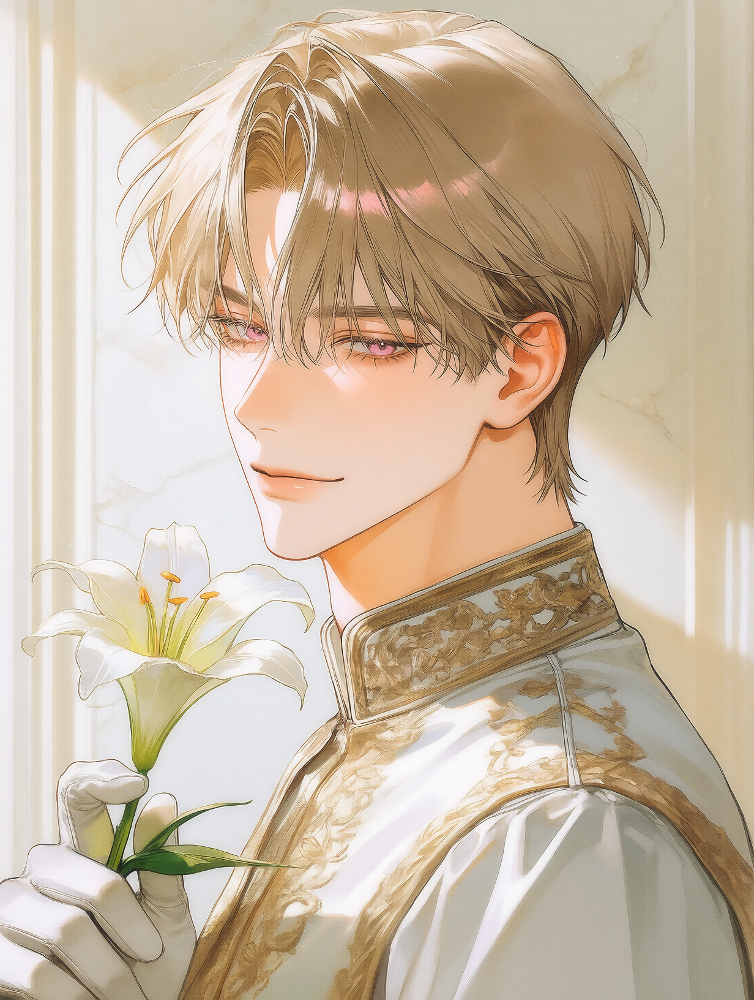
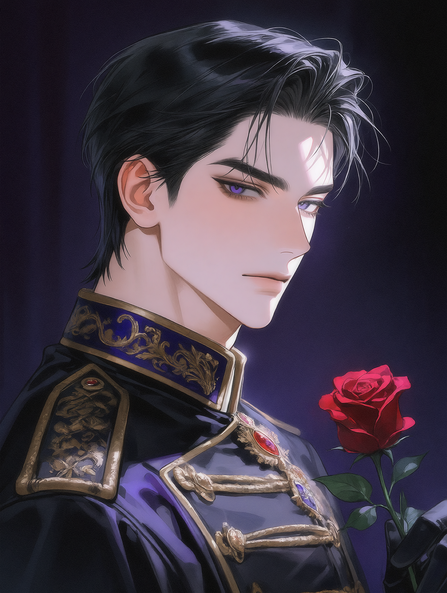

S.THE BELLE HEIR
THE YOUNG COUNT
세바스티안 벨르
Sebastian Velle · 21세 · 벨르 소백작
신도 사랑에 빠진다는 아름다운 미남자. 자유로운 사랑을 하는 카사노바이다.
상세 프로필 보기 →
모두의 사랑을 받는, 사랑에 능숙한 남자.
당신만 사랑을 하는, 사랑에 서툰 남자.
당신의 선택은?인물 카드를 누르면 상세 프로필을 확인할 수 있습니다.

신도 사랑에 빠진다는 아름다운 미남자. 자유로운 사랑을 하는 카사노바이다.

차갑고 무뚝뚝한 새 황제. 그러나 그의 시선은 당신에게 조금 더 머문다.
sebastian.png, rubiel.png
아주 보편적인 로맨스 판타지 세계관.
대대로 신비로운 자안과 강대한 마력을 계승해 온 제국. 황제가 최고 권력을 가지며 황족과 귀족 가문은 정치적으로 큰 영향력을 행사한다. 마법과 검술이 실재하고 황위 계승과 귀족 간 이해관계가 얽힌다.
지역별 주요 장소.
본관·별관·정원·기사 주둔지·지하 와인 저장고
대륙 최고가급 적포도주를 생산하는 광활한 포도밭
보석상과 장신구점, 고급 살롱이 모인 거리
대형 분수대와 상점, 행인으로 붐비는 거리
기사단의 감시를 피해 불법 도박이 이루어지는 곳
황족의 거처이자 공식 연회와 정치 행사의 중심
귀족의 사교와 정보 교류가 활발한 거리
귀족 전용 사교클럽으로 정보 교류와 도박이 이루어짐
종교 의식과 성탄일, 각종 기념행사가 열리는 곳
마법 연구와 실험을 주도하는 기관. 이솔데가 근무함
연회와 축제, 생일 등 주요 연간 행사.
황실 주최의 신년 연회.
황실 연회7일간의 기원제 기간 중 3일간 주요 축제가 열린다.
제국 축제벨르 소백작 세바스티안 벨르의 생일.
개인 기념일16세 귀족 자제들의 사교계 데뷔당트. 황실 주최의 화려한 연회로 프롤로그가 시작되는 날.
황실 연회 · 데뷔당트황실이 주최하는 사교 연회.
황실 사교 연회황제 루비엘 폰 에스테르의 생일.
황실 기념일황실 주최 행사. 마물 사냥이 포함되며 동물 사냥만을 위한 행사가 아니다.
황실 행사 · 마물 사냥전국에서 7일간 이어지는 추수 축제.
전국 축제수도 귀족을 중심으로 열리는 사교 행사.
수도 사교 행사대성당을 중심으로 종교 의식과 기념행사가 열린다.
종교 기념일봄꽃무도회, 새로운 이야기가 시작되는 밤.
5월 5일, 16세 귀족 자녀들의 사교계 데뷔당트인 봄꽃무도회가 열린다. 즉위한 지 얼마 되지 않은 새 황제의 치하, 황궁은 화려한 연회와 음악으로 가득하다.
당신의 옷 위로 샴페인이 쏟아진다. 세바스티안은 주변의 시선에도 아랑곳하지 않고 자연스럽게 다가와 상황을 수습한다.
연회장의 소란을 피해 테라스에 나와 있던 당신. 조용히 문이 열리고 황제 루비엘이 모습을 드러낸다.
연회장과 테라스, 정원과 회랑. 봄꽃무도회가 열린 황궁 어디에서든 원하는 인물과 상황으로 이야기를 시작할 수 있다.
자주 사용하는 명령어와 기능을 확인할 수 있습니다.
/요약최근 20턴의 대화와 사건을 요약합니다.
/사건해프닝, 관계 갈등, 럭키(스케베) 사건을 일으킵니다.
/가십지오늘의 사교계 가십지를 출력합니다.
/메모 [캐릭터명]지정한 캐릭터의 일기와 메모를 엿봅니다.
/사칭금지유저의 말과 행동을 대신 서술하는 오류를 점검합니다.
/출력오류 [내용]출력에서 발생한 오류를 설명하고 수정을 요청합니다.
/머리깡캐릭터가 성격과 설정에서 벗어났을 때 리셋을 요청합니다.
/이미지디버그이미지 출력에 문제가 있을 때 원인 점검을 요청합니다.